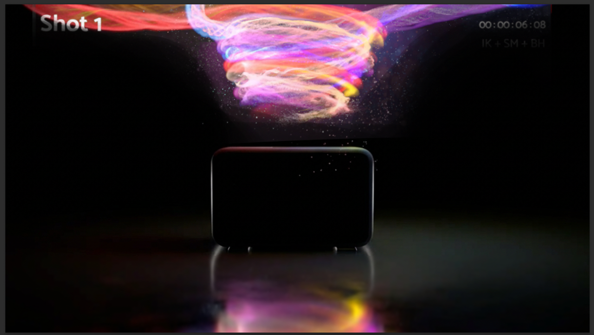
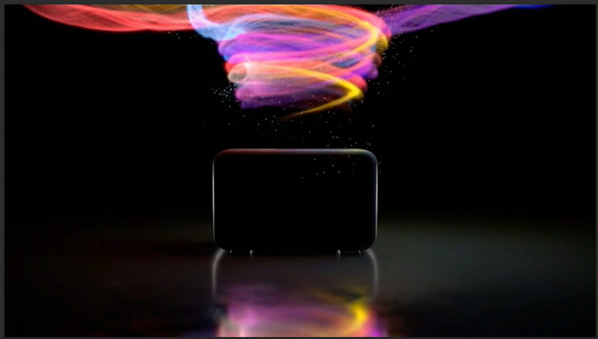

Week8
Team Member
Yiqi Zheng (Fx)
Riley Ho (Fx)
Itim Kongsakulvatanasook (Fx)
Sofia Mancias (Compositing)
Feb 29
Benji Hopkins (Look Dev)
SCAD X HARBOR X ETC - Week 8
Hello, this is my eigth week of the Scad x Harbor x ETC blog!
These are the mentors' feedback from Tuesday's presentation.
Kyle:
-
Shot 1- red looks good, maybe ground more colorful right now the top is more overpowering
-
Shot 2- light brightness is too much on the left side, match it to the right side
-
Boost SFX of laser
-
Feathering of the matte shot 3 is not working; how can we hide that feather?
-
Shot 3 maybe moodier lighting
-
Maybe we don’t need the final painting at all, the particles look cooler
-
Smooth out particles in Shot 4
-
Make sure BG in shot 4 matches the others
Beck：
-
Maybe transfer color instead of a different material?
-
Particles and matte is looking disconnected
-
Colors are also different from particles to matte
-
Finishing shot is very bright
-
Looks like there is no shadows in particles in shot 4
-
Shot 4 looks like flipbook
-
More variations in particles
-
Wood texture needs an upres, looks lower quality than the printer itself
-
Think about direction of wood in the wood piece
-
Beveled edges on wood, needs more bump
Hailey:
-
Shot 4 needs a little bit of color
-
Maybe the little painting can be sitting beside the printer, so it adds a little pop of color
-
Or color coming from the subtle particles finishing
Molly:
-
Shot 1, are you still working on the tube shape of the particles?
-
Subtle beveling needs on some of the objects - especially wood
-
Shot 3 before the particles come in looks dead
-
Maybe one more light in beginning of Shot 3
-
Shot 4, three point lighting instead of just one big light, maybe some subtle color kinda like you have in other shots
-
Grey but a little blue, not too much color
Drew:
-
Shot 1, Need motion blur on particles esp white particles
Billy:


To-Do List:
-
Refine the particles’ path and flow shape (Create noise)
-
Denoise shot 1
-
Avoid the overexposure.
This is our Previs for week 8.
I tested several additional particle layers around the particle flows, but the result did not look visually effective, so we decided to remove them.
Claude also helped refine several aspects of the setup to reduce the string-like appearance of the particles. I found that this line-like effect occurred because particle density became too high in certain regions, causing them to visually merge together.

This code uses position-based noise to create a smooth mask, then applies it to Alpha so the transparency changes gradually and creates a natural dissolve effect.

This code checks how many neighboring particles each point has, remaps that density to a 0–1 range, and randomly deletes points in dense areas to reduce clustering and make the particle distribution look more natural.

This code first sets a base alpha value, then uses a ramp driven by particle age (@nage) to control transparency over time, so the particles gradually fade as they age. Finally, it stores the alpha value into @Tm for visualization or further control.